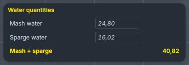
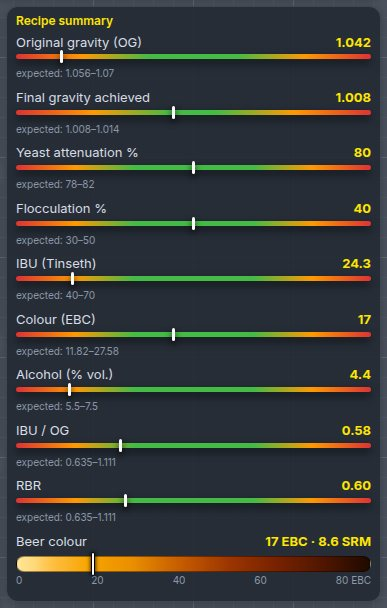
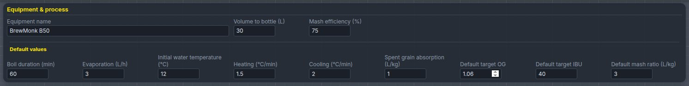

Documentação do OpenMaltForge
O OpenMaltForge (antes OpenBrew, e BrewCraft antes da versão 5.0.0) é uma aplicação de secretária para conceber receitas de cerveja: cálculo da densidade, do amargor e da cor, água e minerais, processo de brassagem, custos, stock e lista de compras, biblioteca de receitas, rótulos e folha de brassagem para imprimir.
Primeiros passos
- Linux: instale o pacote
openmaltforge_<versão>_amd64.deb(menu «OpenMaltForge») ou execute diretamente o programaopenmaltforge_<versão>_linux_amd64. - Windows: execute
OpenMaltForge_<versão>.exe. - macOS: descomprima
OpenMaltForge_<versão>_macos_apple_silicon.zip(Mac M1, M2…) ou…_macos_intel.zip, arrasteOpenMaltForge.apppara Aplicações; no primeiro arranque, clique com o botão direito na aplicação e depois «Abrir» (aplicação não assinada pela Apple).
O OpenMaltForge abre-se na sua própria janela (motor do navegador Chrome, Chromium, Edge ou Brave instalado no
computador). Todos os dados são guardados num único ficheiro: ~/OpenMaltForge/openmaltforge.sqlite (pasta pessoal,
subpasta OpenMaltForge). No primeiro arranque, a base do OpenBrew (~/OpenBrew/openbrew.sqlite), ou senão a do BrewCraft (~/BrewCraft/brewcraft.sqlite),
é retomada automaticamente ou, na sua falta, uma base de uma versão 3.x (brewcraft_3.x.sqlite); o ficheiro
antigo não é modificado.
O OpenMaltForge abre-se sempre no ecrã Conceção.
Uma base nova é preenchida com os dados iniciais: maltes, lúpulos, leveduras, estilos BJCP 2021, águas, ingredientes, tipos de letra.
A interface

- Menu: Conceção, Biblioteca, as bases (Maltes, Lúpulos, Leveduras, Águas, Estilos, Ingredientes, Consumíveis), HTML, Rótulos, Folha de brassagem, Definições, depois o ícone Documentação (livro aberto) que mostra esta página).
- Guardar: escreve imediatamente todos os dados na base. Há também uma gravação automática (a cada 5 minutos por predefinição, ajustável em Definições › Preferências).
- Indicador «Base: openmaltforge.sqlite»: verde quando tudo está guardado. Em caso de problema (programa fechado, escrita recusada), aparece um aviso laranja; um clique volta a tentar a gravação.
- Zona de notificações (sob o menu): mensagens temporárias a verde (gravação, cálculo), erros a vermelho, avisos persistentes a laranja (por exemplo um rácio de maceração demasiado alto para a cuba). Várias mensagens aparecem lado a lado.
- Tema: o interruptor sol / lua, no canto superior direito, alterna entre o tema escuro e o claro; a escolha fica memorizada.
- Rodapé: licença (GNU GPL v3, clique para ler o texto) e número da versão.
Conceção de uma receita
O ecrã Conceção reúne a receita em curso. Tudo é recalculado a cada introdução.
Um duplo clique no título de uma secção recolhe só essa secção: fica o título, seguido de uma seta que indica que está recolhida, e a linha amarela, com a mesma largura. Um duplo clique no título de um radar (Lúpulos, Maltes, Levedura) recolhe toda a linha dos radares. Outro duplo clique expande-a; a escolha é memorizada.
Receita e alvos
- Receita, Estilo (estilos BJCP 2021), Volume a engarrafar, Rácio de maceração (L/kg), datas de brassagem e de engarrafamento.
- Datas:
- Data de brassagem: vazia numa receita nova (＋ Nova receita). Preenchê-la indica que a cerveja foi produzida: os componentes da receita (maltes, lúpulos, leveduras, ingredientes, consumíveis, águas minerais) são descontados do stock, uma única vez, e uma mensagem indica quantos, e a receita recebe o visto verde «Realizado» na Biblioteca (lista e cartões); apagá-la devolve os componentes ao stock e retira o visto. Serve também para o número de lote (
ano#posição) dos rótulos e do HTML. Cada alteração da data de brassagem grava a receita automaticamente (Biblioteca e base), como o botão Guardar. - Data de engarrafamento: preenchê-la faz aparecer a secção Análise organolética do lote; o HTML indica a data de engarrafamento e a análise. Não mexe no stock nem no visto «Realizado». Não pode ser anterior à data de brassagem: essa entrada é recusada (mensagem a vermelho) e o valor anterior é reposto; do mesmo modo, a data de brassagem não pode ser posterior à de engarrafamento.
- Data de brassagem: vazia numa receita nova (＋ Nova receita). Preenchê-la indica que a cerveja foi produzida: os componentes da receita (maltes, lúpulos, leveduras, ingredientes, consumíveis, águas minerais) são descontados do stock, uma única vez, e uma mensagem indica quantos, e a receita recebe o visto verde «Realizado» na Biblioteca (lista e cartões); apagá-la devolve os componentes ao stock e retira o visto. Serve também para o número de lote (
- DI alvo, IBU alvo e botão Calcular: ajustam a receita para atingir a densidade inicial e o amargor pretendidos, sem mudar a sua composição.
- Os alvos: DI alvo = densidade inicial pretendida (ex.
1,060); IBU alvo = amargor pretendido em IBU (ex.25). Uma receita nova retoma-os dos Valores padrão das Definições («DI alvo por omissão», «IBU alvo por omissão»). Quando altera um deles, o cursor correspondente do balanço passa logo para o novo alvo, e a receita é recalculada (como com Calcular) assim que larga as setas do campo, prime Enter ou sai do campo. A tabela de processo também os usa (a DI alvo fixa a densidade após o gelo). - Antes do cálculo: se introduziu os maltes ou os lúpulos em percentagens e o total não for 100 %, uma janela propõe ajustá-los a 100 % (regra de três); se recusar, nada é calculado.
- 1. Os maltes: o OpenMaltForge calcula a DI da receita a partir do peso de cada malte, do seu potencial (base Maltes), do rendimento do equipamento e do volume a engarrafar. Todos os maltes são multiplicados por um mesmo fator = (DI alvo − 1) ÷ (DI atual − 1). As proporções entre maltes não mudam, nem portanto a cor relativa nem o carácter da receita.
- 2. Os lúpulos: com a nova DI o amargor é recalculado (fórmula de Tinseth, multiplicada pelo coeficiente da utilização: First Wort, Fervura, Whirlpool, Hopstand, Dry hop — Definições › Coeficientes de utilização do lúpulo). Todos os lúpulos cujo coeficiente não é nulo são multiplicados por um mesmo fator = IBU alvo ÷ IBU atuais. Para que uma utilização não mude (por exemplo o dry hop), ponha o seu coeficiente a 0.
- Exemplo: 5 kg de maltes dão uma DI de 1,050 e 40 g de lúpulo 20 IBU; com uma DI alvo de 1,060 e 25 IBU alvo, os maltes passam a 6 kg (× 60/50 = × 1,2) e depois os lúpulos são ajustados para 25 IBU à nova densidade.
- Depois do cálculo: os pesos são arredondados (ao grama para os maltes, à décima de grama para os lúpulos) e as percentagens voltam ao modo peso. O balanço da receita, os custos e o processo são recalculados, a receita é gravada e uma notificação verde lembra a DI e os IBU alvo. As quantidades já presentes na lista de compras não mudam (estão fixadas): um triângulo laranja assinala as que passam a ser insuficientes.
- Mensagens de erro (a vermelho): alvos vazios; DI fora de 1,010 a 1,200 ou IBU nulos; nenhum malte reconhecido na base (ou peso nulo); nenhum lúpulo que contribua (nome desconhecido, peso ou tempo nulo, ou todas as utilizações com coeficiente 0). Nesses casos a receita não é alterada.
- Os alvos: DI alvo = densidade inicial pretendida (ex.
- ＋ Nova receita: cria uma receita nova; os alvos e o rácio retomam os valores padrão das Definições e a lista de compras é esvaziada. As tabelas são preenchidas ao acaso a partir das suas bases: um malte base (EBC ≤ 10) e outros dois maltes, dois lúpulos (amargor 60 min, aroma 10 min) e uma levedura; as quantidades são depois ajustadas aos alvos (DI, IBU) como com o botão Calcular. A data de brassagem fica vazia.
- Radares aromáticos dos maltes, lúpulos e leveduras: perfil da receita, valor mostrado ao passar sobre um ponto, ampliação com um clique (Esc para fechar), exportação em imagem com os botões PNG (fundo escuro ou claro).
Maltes, lúpulos, leveduras

- O botão ＋ do título acrescenta uma linha; a cruz vermelha elimina-a.
- Nome: escreva pelo menos 3 letras para escolher na base (a maltaria é indicada após o nome dos maltes).
- Peso ou percentagem: introduza os pesos, ou as percentagens (o peso é então calculado; voltar a introduzir um peso regressa ao modo peso).
- Lúpulos: peso, utilização (First Wort, Fervura, Whirlpool, Hopstand, Dry hop) e tempo; os IBU são calculados pela fórmula de Tinseth, ponderada pelos coeficientes de utilização das Definições.
- Leveduras: número de saquetas, atenuação e floculação da estirpe.
- Carrinho no fim da linha: acrescenta o componente à lista de compras (ver Lista de compras). Fica laranja quando o stock não chega, verde quando o componente já está na lista.

Água e minerais

- Escolha uma ou várias águas (base «Águas») e a sua parte, em litros ou em percentagem.
- Os iões (Cl, SO4, Ca, Mg, Na, HCO3) da mistura são comparados com os intervalos do estilo; a linha de adições (mg/L) calcula as quantidades de minerais, acrescentadas automaticamente aos ingredientes da receita (linhas «— auto»).
Ingredientes e consumíveis

Patamares, quantidades de água, priming



Resumo da receita e custos

Densidade inicial, IBU (logo abaixo, os dois cursores arrastáveis), densidade final, atenuação, floculação, cor (EBC / SRM), álcool, rácios IBU / DI e RBR, com o intervalo esperado para o estilo escolhido, e depois a cor estimada da cerveja.
Cursores arrastáveis: os cursores DI e IBU têm uma pequena pega redonda por cima. Arraste-a com o rato: a DI alvo ou os IBU alvo variam como o valor do cursor (o campo acompanha em direto); ao soltar, a receita é recalculada como com o botão Calcular e o cursor fica onde o largou. Os outros cursores são indicadores e não se movem.

Análise sensorial

Data de prova, densidades medidas, ABV real, cor, limpidez, espuma, carbonatação, e depois notas e comentários por critério (aroma, aspeto, sabor, sensação na boca, impressão geral).
Introdução de expressões matemáticas
Em qualquer campo de introdução, um texto que começa por = é calculado. O resultado substitui a fórmula quando valida com Enter ou sai do campo, e é tido em conta como uma introdução normal.

=4,5+0,25 no peso (kg) do primeiro malte…
| Elemento | Escrita | Exemplo | Resultado |
|---|---|---|---|
| Adição, subtração | + - | =4,5+0,25 | 4,75 |
| Multiplicação, divisão | * ou ×, / ou ÷ | =3*(2+1,5)/4 | 2,625 |
| Potência | ^ | =2^10 | 1024 |
| Parênteses | ( ) | =(20-12)*1,5 | 12 |
| Percentagem | % após um número (÷ 100) | =30*85% | 25,5 |
| Raiz quadrada | sqrt( ) | =sqrt(16) | 4 |
| Valor absoluto | abs( ) | =abs(12-20) | 8 |
| Arredondamento | round( ) | =round(40/3) | 13 |
| Número negativo | - à frente | =-2+5 | 3 |
- A vírgula ou o ponto servem de separador decimal (
4,5=4.5); os espaços são ignorados. - Prioridades habituais: parênteses, depois potência, depois multiplicação e divisão, depois adição e subtração.
- Num campo numérico, a tecla = (ou colar um texto que começa por
=) passa o campo para introdução de texto durante a fórmula. - Uma fórmula inválida (parêntese em falta, divisão por zero…) não é aplicada: o campo pisca a vermelho e a sua dica indica «Fórmula inválida».
- O resultado é arredondado a 12 algarismos significativos.
=5,6*80%), converter 12 oz em gramas (=12*28,35), completar um volume (=30-4,2-1,5).Lista de compras e stock

Adição automática
- Um malte, lúpulo, levedura, ingrediente, consumível ou uma água mineral usado na receita em curso entra na lista assim que a receita esgota o seu stock (quantidade pedida ≥ stock); a quantidade proposta é o que falta (ou a quantidade usada quando o stock fica exatamente a zero). Para as águas, são os litros de cada água mineral da mistura; as águas da rede nunca são acrescentadas.
- Sai automaticamente assim que o stock volta a chegar (por exemplo diminuindo a quantidade na receita).
- Quantidades fixas: quando um artigo está na lista, a sua quantidade deixa de mudar sozinha (botão «Calcular», modificação de uma linha…). Se ficar inferior ao que falta, aparece um triângulo laranja ao lado da quantidade (a sua dica indica o que falta) e uma notificação laranja assinala os artigos em causa; corrija a quantidade para os fazer desaparecer.
- Os componentes não usados pela receita nunca são acrescentados, mesmo com stock a zero.
- ＋ Nova receita esvazia a lista de compras (adições manuais incluídas); depois volta a preencher-se segundo a nova receita.
- Componente retirado da receita: quando elimina um componente da receita (ou o substitui por outro), ele também sai da lista de compras — incluindo o malte, o lúpulo e a levedura propostos por omissão numa receita nova, e um artigo adicionado com o carrinho da receita. Só ficam os artigos adicionados a partir dos ecrãs de base (Maltes, Lúpulos…).
Adição manual
- Carrinho no fim de uma linha da receita: acrescenta o componente se ainda não estiver na lista (quantidade em falta, senão a quantidade usada pela receita).
- Carrinho dos ecrãs de base (Maltes, Lúpulos…, águas minerais): acrescenta o artigo com a quantidade em falta para a receita, ou uma quantidade predefinida.
- Um artigo acrescentado à mão, ou cuja quantidade modifique, nunca é retirado automaticamente.
- A cruz retira um artigo; se continuar em falta para a receita, não volta a ser posto enquanto o stock continuar esgotado.
- O ícone da impressora no título imprime a lista de compras (ou guarda-a em PDF).
Botão info
- O botão ⓘ, logo antes da quantidade a comprar de um artigo, dá o estado do stock do componente: deixe o rato por cima durante um segundo (ou clique) para ver o stock atual, a necessidade da receita atual, o stock após a compra (stock atual + quantidade a comprar) e o que restará após a brassagem (a vermelho se ainda faltar). Se a receita já estiver realizada, a bolha lembra que o seu consumo já foi descontado; um artigo ausente da base não tem stock conhecido.
Stock
- Cada base tem uma coluna stock (kg para os maltes, g para lúpulos e ingredientes, saquetas para as leveduras, unidades para os consumíveis, litros para as águas).
- Base Águas: preço/L e stock (L) para as águas minerais; o seu custo entra no custo da água da receita.
- Quando a data de brassagem da receita é preenchida, os seus componentes são descontados do stock, uma única vez. Apagar a data devolve-os ao stock.
Biblioteca e importações

- «Guardar» na Conceção guarda a receita em curso na biblioteca (atualizada se já lá estiver).
- Lápis: abre a receita na Conceção. Cruz: elimina-a (após confirmação).
- Colunas: nome, cervejeiro, realizado, estilo, DI, DF, IBU, EBC, ABV, maltes, lúpulos, leveduras; uma linha de filtros e ordenação com um clique no cabeçalho. O botão borracha apaga todos os filtros.
- Vista de cartões: apresentação em fichas com a cor da cerveja.
- Número de brassagem:
ano#posição(ex.2026#12), posição por data de brassagem entre as receitas do ano, excluindo as receitas importadas. Aparece nos rótulos e no HTML. - Importar beer.xml (BeerXML 1.0) e Importar PDF (impressão de uma receita Brewfather, exportação PDF do BeerSmith): as receitas importadas são só de leitura (copie-as para as modificar). Importar beer.xml: um ingrediente ausente da base é acrescentado com os dados do ficheiro. Importar PDF: uma caixa «Correspondência dos ingredientes» propõe ligar cada ingrediente desconhecido a um ingrediente da base; caso contrário fica como texto simples na receita.

Bases de ingredientes
Ecrãs Maltes, Lúpulos, Leveduras, Águas, Estilos, Ingredientes, Consumíveis: a base de referência usada pelas receitas.

- Uma linha de filtros sob os cabeçalhos (ver Filtros abaixo); ordenação com um clique no cabeçalho; paginação de 15 linhas.
- No fim da linha: lápis (modificar a linha, senão só de leitura), duplicar, carrinho (lista de compras), cruz (eliminar). O ＋ do cabeçalho acrescenta uma linha.
- Exportar CSV, Colar CSV (importar linhas de uma folha de cálculo) e Limpar tudo.
- Notas aromáticas numa escala de 0 a 5; maltes, lúpulos e leveduras comparam-se num radar (até 5 nomes).
- Estilos: os 123 estilos BJCP 2021 com descrição, intervalos (IBU, SRM, OG, FG, ABV) e perfis de água; ＋ Estilo para adicionar um. Os estilos «especiais» sem intervalos (DI, DF, IBU, SRM, ABV: 21B, 27, 28 a 34) recebem, para cada intervalo em falta, o valor mais baixo e o mais alto de todos os estilos, para que o balanço e o cálculo se mantenham coerentes.
Filtros
Cada coluna tem o seu campo de filtro, logo abaixo do cabeçalho. Vários filtros somam-se: uma linha só é mostrada se os respeitar todos. O botão borracha, no fim da linha, apaga todos os filtros e volta à ordenação por nome. Numa coluna numérica (EBC, alfa, atenuação, preço, stock, iões, intervalos dos estilos…), o filtro aceita uma expressão matemática; x designa o valor da coluna:
| Expressão | Linhas mostradas |
|---|---|
pils | coluna de texto: o valor contém «pils» (sem distinguir maiúsculas nem acentos) |
3 ou =3 | x = 3; «3» é reescrito «=3» ao sair do campo |
!=3 ou <>3 | x ≠ 3 |
<3 | x < 3 |
<=3 | x ≤ 3 |
>4 | x > 4 |
>=4 | x ≥ 4 |
[2;4] | 2 ≤ x ≤ 4 (limites incluídos) |
]2;4[ | 2 < x < 4 (limites excluídos) |
]2;4] | 2 < x ≤ 4 |
[2;4[ | 2 ≤ x < 4 |
2;4 | x = 2 ou x = 4 (lista: tantos valores quantos quiser, ex. 2;4;6) |
- A vírgula ou o ponto servem de separador decimal (
>=3,5=>=3.5); os números negativos são aceites (>-1) e os espaços ignorados. - Uma linha com a célula vazia é afastada por uma expressão numérica.
- Coluna stock:
1= em stock,0= sem stock. - Numa coluna de texto, ou enquanto a expressão estiver incompleta (ex.
2;), o que se escreve é procurado como texto. A dica dos campos de filtro numéricos recorda a sintaxe.


Renderização HTML

A tabela EAU (água) segue as «Quantidades de água» da Conceção (água de maceração, água de lavagem, total maceração + lavagem + outros); PARAMETRES indica também a duração da fervura (sem número de brassagem nem eletricidade neste resultado), e a tabela PROCESS segue as fases do Processo.
Rótulos

- Formatos (coluna da direita): faixas, rótulos retangulares, redondos, cápsulas, golas, modelos ilustrados (cartaz de concerto, saloon, vinil, reggae, romântico, soul, punk…), com as suas dimensões e o número por folha A4.
- Texto do código QR (um endereço ou um texto livre), Volume (cl), Número de rótulos, cores da moldura, do tipo de letra e do fundo.
- Tipo de letra: lista pendente em que cada tipo de letra é mostrado no seu próprio estilo; escreva algumas letras para filtrar, setas e Enter para escolher. Os botões A↑ / A↓ aumentam ou reduzem o texto.
- O logótipo dos rótulos escolhe-se em Definições › Logótipo dos rótulos. O número de brassagem é calculado automaticamente.
- Imprimir / PDF: impressão da folha (ou gravação em PDF).

Folha de brassagem

- Cinco apresentações: Clássico, Ficha a preencher, Cartaz rock, Passo a passo, Diário de bordo.
- Cores da moldura / destaque, do fundo e do tipo de letra; escolha do tipo de letra (cada nome mostrado no seu tipo de letra).
- É possível escrever diretamente na folha: volumes, densidades e patamares realmente obtidos, e notas de brassagem; tudo é guardado com a receita.
- Imprimir / PDF.
Definições


- Equipamento e processo: nome do equipamento, volume máximo de maceração (um campo vermelho e um aviso assinalam-no quando a água de maceração + o malte o atingem), rendimento da maceração, volume morto sob o cesto e taxa de evaporação horária; Valores padrão: aquecimento, arrefecimento, DI e IBU alvo, rácio de maceração (aplicados a cada receita nova; a duração da fervura ajusta-se nos patamares da Conceção). O volume a engarrafar e o rácio de maceração da receita introduzem-se na Conceção.
- Processo: o processo em fases (por omissão: maceração → pré-lavagem, lavagem → gelo, engarrafamento), etapa a etapa, com o volume e a densidade calculados em cada linha. ＋ Fase adiciona uma fase, ＋ (no cabeçalho das colunas) adiciona uma etapa à fase; o lápis no fim de cada linha torna editáveis o nome da fase ou o nome, as perdas e as adições da etapa (OK ou Enter para validar); ▲ ▼ deslocam uma etapa (no limite de uma fase passa para a fase vizinha) ou uma fase; ✕ elimina (uma fase que contém etapas pede confirmação). Uma caixa vazia retoma o valor automático das Definições. A linha DI segue a fase do gelo, a linha DF termina a última fase. Antes da contração do mosto ao arrefecer, os volumes são medidos a quente: a densidade (lida numa amostra arrefecida) é calculada sobre o volume frio equivalente, pelo que a contração não altera a densidade. ↺ predefinição volta ao processo de origem. As Adições das etapas cujo nome contém «glace» (gelo) dão a quantidade de gelo usada para calcular a Temperatura do mosto no fermentador no fim da transferência (Definições de brassagem); se houver várias, as suas adições somam-se. O volume de água total soma todas as «Adições» do processo (maceração, volume morto, lavagem, gelo, priming, adições personalizadas). A temperatura inicial da água (usada para a eletricidade) é a última linha da tabela de volumes, sob o Processo.
- Definições de brassagem: uma única lista, por esta ordem: volume máximo do fermentador inox, perda no fundo do fermentador, ocupação do malte seco moído, retenção de água pelos grãos potencial do grão (calculado a partir dos maltes, só de leitura) e absorção do bagaço (L/kg); uma caixa vazia assume o valor automático. Os outros valores ajustam-se onde são usados: Conceção (grão, rácio, volume a engarrafar, duração da fervura), Processo (trub, contração, priming, gelo) e Equipamento e processo.
- Necessidades de eletricidade: potência e duração de cada posto, kWh e custo.
- Coeficientes de utilização do lúpulo por utilização, aplicados aos IBU de Tinseth.
- Logótipo dos rótulos: escolher uma imagem.
- Tipos de letra: tipos de letra Google Fonts guardados na base; Importar (vários ficheiros de uma vez), filtro, pré-visualização ao passar o rato. Os tipos de letra da interface, marcados com um cadeado, não podem ser eliminados; ao eliminar outro tipo de letra, uma janela propõe um tipo de letra de substituição.
- Cálculos › Temperatura: temperatura de uma mistura de líquido frio e líquido quente, cada um com o seu volume (L) e a sua temperatura (°C). Por omissão, o líquido frio é o gelo do processo (−16 °C) e o quente o mosto transferido (95 °C): o resultado é a temperatura do mosto no fermentador no fim da transferência. Um líquido frio a 0 °C ou menos é tratado como gelo (é preciso derretê-lo e depois aquecê-lo). Uma caixa vazia retoma o valor por omissão. O resultado aparece a amarelo, como o total da eletricidade. As secções Cálculos e Contacte-me ficam por baixo de Tipos de letra.
- Contacte-me: o endereço do programador,
openmaltforge@pm.me(clique = nova mensagem no seu correio, Copiar = endereço na área de transferência), para uma pergunta, uma ideia ou um problema. - Unidades: secção em preparação (desativada).
- A pesquisar (visível só quando necessário): ingredientes encontrados numa importação (PDF Brewfather / BeerSmith) e ausentes da base. Cada ingrediente é uma etiqueta (a sua cruz retira-o; Apagar tudo esvazia a lista); um ingrediente desaparece sozinho assim que existe na base. Geração do prompt: o texto mostrado é construído automaticamente, na língua da interface (é regenerado quando muda de língua):
- uma introdução que apresenta a tarefa (pesquisar na Internet os dados de cada ingrediente e produzir ficheiros CSV);
- uma secção por categoria em causa (maltes, lúpulos, leveduras, ingredientes diversos), com o nome do ficheiro CSV esperado (
malts_nouveaux.csv,houblons_nouveaux.csv,levures_nouvelles.csv,ingredients_nouveaux.csv) e a lista de ingredientes, cada um com os dados encontrados na receita importada e as receitas onde aparece; - as regras comuns dos CSV (codificação UTF-8, separador ponto e vírgula, vírgula decimal…);
- para cada ficheiro: os cabeçalhos exatos das colunas da sua base, o significado de cada coluna (unidades, escalas de aromas de 0 a 5…) e uma linha de exemplo tirada da sua base para mostrar o formato.

- Gravação automática: ativada ou não, e intervalo em minutos (0 = após cada modificação). Desativada, só o botão «Guardar» escreve na base.
- Idioma da interface: francês, inglês, espanhol, italiano, português. Toda a interface está traduzida, incluindo o prompt da secção «A pesquisar» e esta documentação (nas línguas que não o francês, as capturas mostram a interface em inglês).
- Exportar a base…: descarrega uma cópia
AAAAMMDD_openmaltforge.sqlitedo estado apresentado. - Mudar de base…: substitui a base pelo conteúdo de outro ficheiro
.sqlite; o ficheiro é verificado e atualizado, e é conservada uma cópia da base atual emsauvegardes/.

Dados e cópias de segurança
- Base única:
~/OpenMaltForge/openmaltforge.sqlite(um só ficheiro, que pode ser copiado a qualquer momento). - Antes de qualquer atualização da estrutura da base, e antes de uma mudança de base, é feita uma cópia em
~/OpenMaltForge/sauvegardes/. - Uma base criada por uma versão mais recente do OpenMaltForge é recusada (instale a versão mais recente).
- As bases antigas (BrewCraft 1.x a 4.x) são reconhecidas e convertidas; a base do OpenBrew 5.x (
~/OpenBrew/openbrew.sqlite), ou senão a do BrewCraft 4.x (~/BrewCraft/brewcraft.sqlite), é retomada no primeiro arranque do OpenMaltForge.
Dicas
- Campos calculados (fundo mais escuro, só de leitura): passe o rato por cima durante meio segundo para ver como o valor é calculado.
- Esc fecha as caixas de diálogo e as ampliações; Enter valida.
- Um clique num campo seleciona o seu conteúdo: o que escrever substitui-o diretamente.
- As fórmulas (=) funcionam em todo o lado, incluindo nas bases e nas definições.
OpenMaltForge — aplicação sob licença GNU GPL v3. Ícones Lucide (licença ISC).